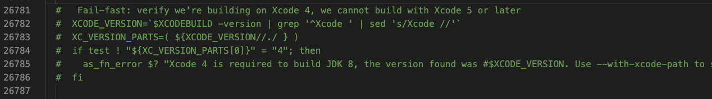
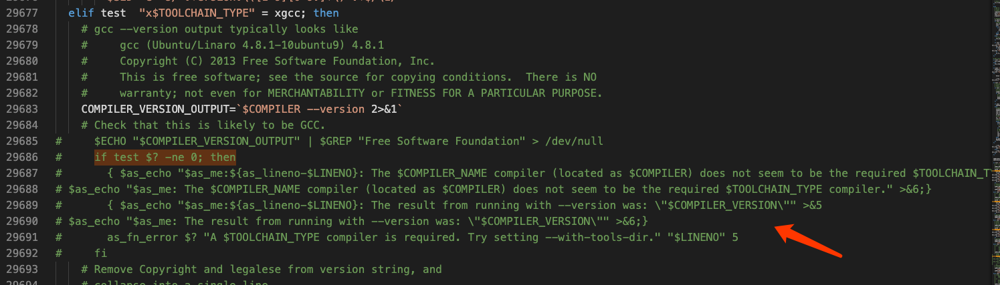
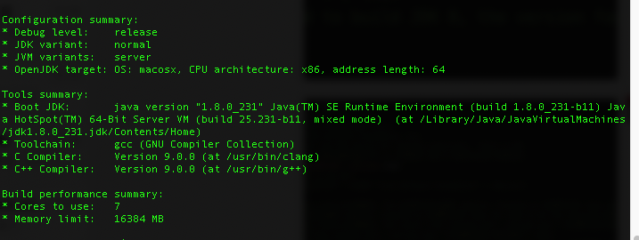
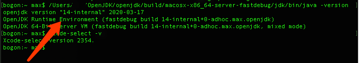

前言
最近在学习《深入理解Java虚拟机》,如果想要更深入的理解还是要自己编译Java虚拟机，这样有助于理解的更加透彻,但是编译的过程中遇见的很多问题,而且有的问题似懂非懂的,再次记录一下遇见的问题。
编译环境
MacOS Mojave 10.14.5
Xcode 9.0(开始我下的10.0的版本,因为缺少libstd++,所以换成了9.0)
brew
gcc
git
brew install autoconf
brew install freetype
MacOS 切换 Clang 为 GCC
MacOS默认的gcc命令是clang编辑器,gcc –version
安装gcc
1
2
3
4
5
6
7
8
9
10
11
12
13
14
15
brew install gcc4.9
open ~/.bash_profile
#在bash_profile中添加
alias gcc='gcc-4.9'
alias cc='gcc-4.9'
alias g++='g++-4.9'
alias c++='c++-4.9'
#保存关闭
source ~/.bash_profile
gcc --version
#就变成自己安装的gcc g++了。安装freetype
brew install freetype设置环境变量
1
2
3
4
5
6
7
8
9
10
11
12
13
14
15
16
17
18
19
20
21
22
23
24
25
26
27
28
29
30
31
32
33
34
35
36
37
38
39
40
# 设定语言选项，必须设置
export LANG=C
# Mac平台，C编译器不再是GCC，是clang
export CC=clang
# 跳过clang的一些严格的语法检查，不然会将N多的警告作为Error
export COMPILER_WARNINGS_FATAL=false
# 链接时使用的参数
export LFLAGS='-Xlinker -lstdc++'
# 是否使用clang
export USE_CLANG=true
# 使用64位数据模型
export LP64=1
# 告诉编译平台是64位，不然会按32位来编译
export ARCH_DATA_MODEL=64
# 允许自动下载依赖
export ALLOW_DOWNLOADS=true
# 并行编译的线程数，编译时间长，为了不影响其他工作，我选择为2
export HOTSPOT_BUILD_JOBS=2
# 是否跳过与先前版本的比较
export SKIP_COMPARE_IMAGES=true
# 是否使用预编译头文件，加快编译速度
export USE_PRECOMPILED_HEADER=true
# 是否使用增量编译
export INCREMENTAL_BUILD=true
# 编译内容
export BUILD_LANGTOOLS=true
export BUILD_JAXP=true
export BUILD_JAXWS=true
export BUILD_CORBA=true
export BUILD_HOTSPOT=true
export BUILD_JDK=true
# 编译版本
export SKIP_DEBUG_BUILD=true
export SKIP_FASTDEBUG_BUILD=false
export DEBUG_NAME=debug
# 避开javaws和浏览器Java插件之类的部分的build
export BUILD_DEPLOY=false
export BUILD_INSTALL=false
unset JAVA_HOME下载源码,编译
在这儿就出现问题了,我知道的有两种下载的源码的方式一种是通过
1
2
3
4brew install mercurial
hg clone http://hg.openjdk.java.net/jdk8u/jdk8u-dev/
cd jdk8u-dev
sh ./get_source.sh (等待..)然后运行
bash ./configure --with-freetype-include=/usr/local/include/freetype2 --with-freetype-lib=/usr/local/lib/
下面问题来了 如果上面都做了应该会出现两个问题
a. Xcode版本不符合1
2
3
4
5
6
7
8checking flags for boot jdk java command ...
checking flags for boot jdk java command for big workloads... -Xms64M -Xmx1600M -XX:ThreadStackSize=1536 -XX:PermSize=32m -XX:MaxPermSize=160m
checking flags for boot jdk java command for small workloads... -XX:+UseSerialGC -Xms32M -Xmx512M
checking for jtreg... no
checking Determining if we need to set DEVELOPER_DIR... no
checking for xcodebuild... /usr/bin/xcodebuild
configure: error: Xcode 4 is required to build JDK 8, the version found was 9.0. Use --with-xcode-path to specify the location of Xcode 4 or make Xcode 4 active by using xcode-select.
configure exiting with result code 1修改
common/autoconf/generated-configure.sh,大约26780行,注释掉，如下图

b. Gcc问题1
2
3
4
5
6
7
8
9
10
11...
checking for xcodebuild... /usr/bin/xcodebuild
checking Determining Xcode SDK path... /Applications/Xcode.app/Contents/Developer/Platforms/MacOSX.platform/Developer/SDKs/MacOSX10.13.sdk
checking for clang... /usr/local/opt/llvm@4/bin/clang
configure: Resolving CC (as /usr/local/opt/llvm@4/bin/clang) failed, using /usr/local/opt/llvm@4/bin/clang directly.
checking resolved symbolic links for CC... /usr/local/Cellar/llvm@4/4.0.1/bin/clang-4.0
checking if CC is disguised ccache... no, keeping CC
configure: The C compiler (located as /usr/local/Cellar/llvm@4/4.0.1/bin/clang-4.0) does not seem to be the required GCC compiler.
configure: The result from running with --version was: "clang version 4.0.1 (tags/RELEASE_401/final)"
configure: error: GCC compiler is required. Try setting --with-tools-dir.
configure exiting with result code 1解决办法,修改两处,第一处大约
27936行,第二处大约29677行

然后再次执行bash ./configure --with-freetype-include=/usr/local/include/freetype2 --with-freetype-lib=/usr/local/lib/
这样就成功了
第二种是通过
1
2
3
4
5git clone https://github.com/unofficial-openjdk/openjdk.git
cd openjdk && git checkout -b build
bash configure --enable-debug --with-jvm-variants=server --enable-dtrace
make clean
make jdk过程大约20分钟左右吧
进入如下编译目录./java -version
